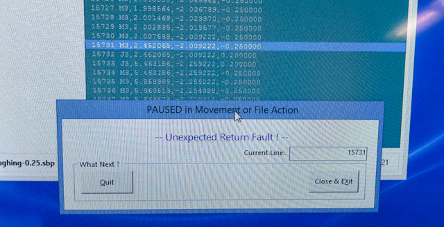
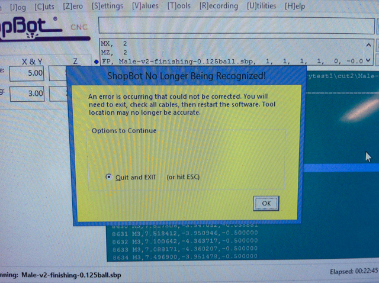

Below are a list of problems or errors that you may encounter when using the cnc mill:
Unexpected Return Fault
This was encountered when the gantry was moving, and the spindle was supposed to go upwards again-- but it didn't. So this error appeared on screen, and had to manually shut off the spindle from spinning. Not sure of the cause exactly, but it could have been the computer going to sleep.
ShopBot no longer being recognized
This was encountered when the shopbot was operating normally, then it just decided to stop working. After restarting the software, everything was working normally again and this error was not encountered.
Running into a drill bit
This shouldn't happen if you placed your designs carefully and exported your toolpaths correctly. But it can sometimes happen. This is dangerous, as small pieces of metal go flying around.
After this happens, it is best to throw away the screw, clean the working area, install a new one.
Disengage the spindle to take the bit out. Inspect it to see if there was any damage. If there was none, you can put it back.
It's a good idea to re-zero the z-axis if this happens.